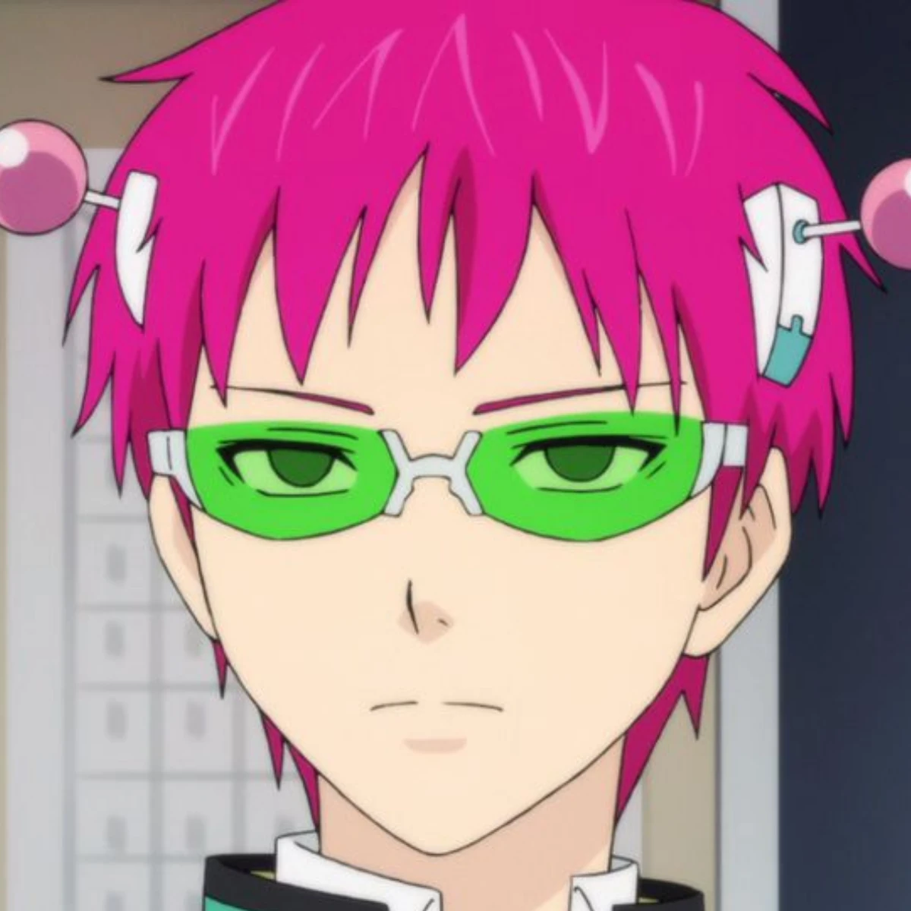

Top 5 Characters in the Anime
-

- Kusuo Saiki
- Shun Kaido
- Reita Toritsuka
- Metori Saiko
- Satou Hiroshi
- The main character of the story. A psychic and a coffee jelly lover. He avoids people at all costs but fails to do so for all the 'unique' characters are attracted to his charm and befriends him without him knowing. He loves the character "Satou" for being the most 'normal' character. He dreams to live a normal life.

- Shun is the first person who approached Saiki and befriended him (even though Saiki didn't want to). He has a delusional mind and a wild imagination. His character adds life to Saiki's life as he drags Saiki along his journey as a hero against "The Jet-Black Wings". He acts cool and strong; however, he only ends up embarrassing himself more often than not.

- Reita Toritsuka is one of the characters closest to Saiki since he also has an "ability" to see and talk with ghosts. He is immature yet very likable. He helps Saiki in his daily troubles but sometimes, is the trouble.

- Saiko is the richest guy in town. He meets Saiki because he followed Teruhashi (the prettiest girl in the town) to their school and misunderstands him as a "love rival". He is an egoist and he is stubborn however, Saiki and his friends starts to make him see a wider perspective about the rest of the world.

- Satou is the most "normal" guy in the eyes of Saiki. His friends are nerds and he lives the most normal life ever. Saiki continues to admire him from afar and protects him from his friends who are curious about him. Satou is the most likable character according to Saiki.